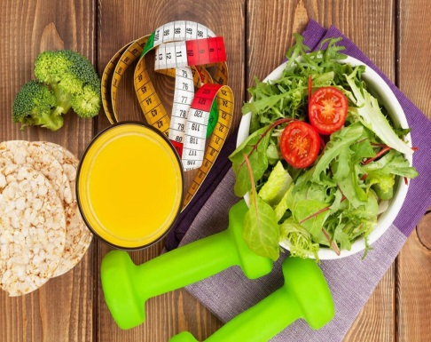

Фитнес для похудения играет ключевую роль, наравне с правильным питанием и здоровым образом жизни. Снижение массы тела всего на 5% позволяет достичь клинически значимых улучшений метаболических показателей и одновременно снизить риски для здоровья. Тем не менее, современные методы борьбы с лишним весом часто носят временный эффект.
Почему мы набираем лишний вес?
Исследования доказывают, что для того, чтобы терять вес – нужно есть, но правильно! Результативность похудения на 30% зависит от физических нагрузок, а на 70% - от рациона питания. Поэтому крайне важно придерживаться здорового меню, а не морить себя голодом, ведь на процесс естественного сжигания жира влияет не только калорийность, но и жиро-углеводно-белковый состав продуктов, а также длительность интервалов между приемами пищи. Правильно подобранный сбалансированный рацион станет залогом положительного результата спортивных тренировок.
Это не значит, что нужно морить себя голодом. Для получения долгосрочного результата придется выработать несколько привычек и придерживаться несложных прави.
При составлении режима питания помните:
- питаться нужно небольшими порциями – для поддержания баланса пять раз в день (три основных приема пищи и два перекуса между ними), для снижения веса шесть-семь;
- интервал между приемами пищи не должен превышать трёх часов;
- завтрак должен быть сытным, ужин лёгким, поэтому продукты с высоким содержанием жиров и углеводов стоит перенести на утро и день.
Похудение – это не только внешние изменения, но и внутренние (осознанность, самоконтроль, структурность и выстраивание гармоничных отношений с телом). Правильный подход – разнообразное, вкусное лично для вас питание со сбалансированным соотношением макро- и микронутриентов и достаточной, но не чрезмерной калорийностью. Такой рацион даст силы для тренировок, тело станет не только подтянутым, но и здоровым, а настроение всегда приподнятым.
Принято считать, что питание при физически затратных занятиях должно быть преимущественно белковым. Это не совсем так: очень важно дополнить его сложными углеводами, которые восполняют потерю энергии при тренировках. Без них вы будете постоянно чувствовать усталость, слабость, что отразится на спортивных результатах. В диете для атлетов должны быть и жиры – при правильной дозировке они помогают сохранить здоровье и даже способствуют похудению.
Белки.Количество белка должно быть не меньше 40-45%. Роль белков вообще невозможно переоценить. Белки принимают участие во всех обменных и окислительных процессах, являются "строительным" материалом для мышц, формируют иммунную систему. К тому же пища, богатая белком, помогает быстро утолить голод и надолго сохранить чувство сытости.
Углеводы. Меню фитнес-диеты подразумевает правильный белково-углеводный баланс. Попадая в организм, углеводы подвергаются химическим окислительным процессам, чтобы в итоге стать активными компонентами иммунной системы, принимать участие в других защитных реакциях организма, а самое главное - бесперебойно обеспечивать его энергией.
Оптимальная доля сложных углеводов в рационе (от 40-45%) наполнит тело энергией, защитит от сезонных болезней. Важнейшие нутриенты, окисляясь в организме, «помогают» белкам строить мышцы. Для соблюдения баланса между фитнесом и питанием углеводные продукты желательно кушать в первой половине дня. Для снижения веса избегайте простых углеводов.
Жиры. Поклонникам фитнеса нельзя полностью исключать жиры из рациона. Многие считают, что лучше отказаться от жиров на время похудения. Зачем употреблять жир когда хочешь от него избавиться? Но правильное питание при занятиях фитнесом включает не только углеводы с белками, но и жиры. Они обеспечивают всасываемость ряда минеральных веществ, служат источником витаминов A, D, E, K, участвуют в синтезе мужских и женских половых гормонов. Полиненасыщенные жирные кислоты Омега-3 помогают регулировать обмен веществ и поддерживать нормальный уровень холестерина. Количество жиров в ежедневном рационе нуждается в строгом контроле, но отказываться от них полностью категорически не рекомендуется. Отдавайте предпочтение питанию богатому полиненасыщенными кислотами. Жиры не стоит оставлять на вечер – в меню ужина их количество должно быть минимальным.
Для эффективности фитнеса и правильного питания режим потребления жидкости и соблюдение водного баланса чрезвычайно важны.
Достаточное количество жидкости поможет:
- избежать обезвоживания после занятий – оно проявляется головными болями, раздражительностью, слабостью, быстрой усталостью;
- улучшить моторику кишечника и органов ЖКТ, ускорить метаболизм и вывод вредных веществ из организма – в особенности, если правильный питьевой баланс дополнен питанием, богатым клетчаткой;
- интенсивнее худеть.
Наряду с другим нездоровым поведением, короткая продолжительность сна является фактором риска увеличения веса как у взрослых, так и у детей. Исследование, проведенное в Американском журнале клинического питания, показало, что, когда людям не хватает сна, поздние ночные перекусы увеличиваются, и они с большей вероятностью выбирают закуски с высоким содержанием углеводов.
Также сокращение продолжительности сна влияет на гормоны, участвующие в регуляции аппетита, а именно – на лептин и грелин. Это может спровоцировать переедание. По данным еще одного исследования, люди, лишенные сна, потребляют на 385 калорий в день больше, чем те, кто спит регулярно и в достаточной мере. С нарушенным ритмом сна можно получить дополнительно 7 килограммам в год.
Выбирая, что съесть перед фитнесом, отдавайте предпочтение белковым блюдам с небольшим содержанием калорий и употребляйте их не позже, чем за один-два часа до занятий. Если полноценно пообедать или поужинать не удалось, за полчаса до тренинга можно съесть горсть ягод, фрукт, что-то кисломолочное или выпить протеиновый коктейль. Полезен будет 200-250 мл чая без молока, сахара, минеральной воды без газа.
Фитнес и питание не слишком хорошо сочетаются – лучше отдать предпочтение питью. Воду во время тренинга пить необходимо, внимательно следя за своим состоянием и обращая внимание на признаки обезвоженности: сухость во рту, головокружение, резкая усталость. Пить нужно маленькими глотками, через каждые 15-20 минут. Если длительность тренинга превышает час, стоит добавить к воде сок или протеиновый коктейль. Много жидкости при физических нагрузках пить не стоит, чтобы не давать на сердце лишней нагрузки.
Тело должно восполнить потраченную энергию, поэтому спортсменам рекомендуют через 40-100 минут принимать белково-углеводную пищу – «углеводное окно». Она поможет восстановить мышцы, насытит, ускорит метаболизм, пополнит запас гликогена. Если вы на диете для снижения веса, делайте «углеводное окно» через полтора-два часа после тренинга. В питание стоит включить:
- омлет, паровое, отварное мясо или рыбу;
- сложные углеводы – цельнозерновая паста или хлеб, печеный картофель, бурый рис;
- кислый натуральный сок – клюквенный, виноградный, апельсиновый (разбавленный водой).
Если вы хотите навсегда избавиться от лишних килограмм и жаждете перемен, но вы не знаете с чего начать, команда лагеря для похудения "Будь в форме" поможет вам сделать первые шаги к себе обновленному. Любые цели достижимы, каждую вершину можно покорить.